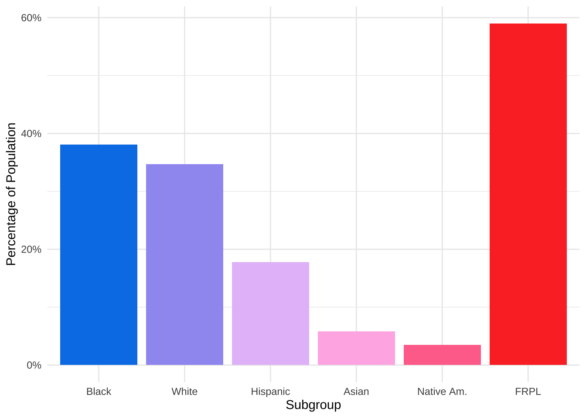
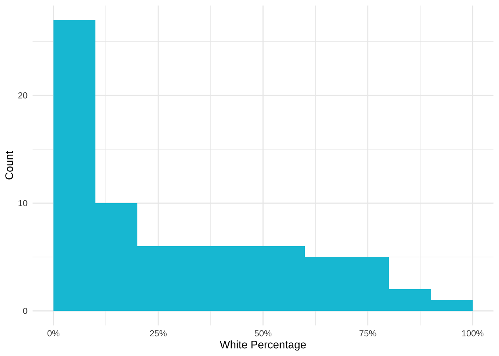
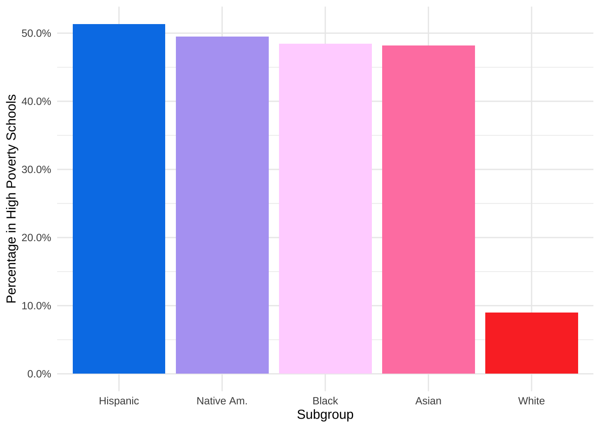
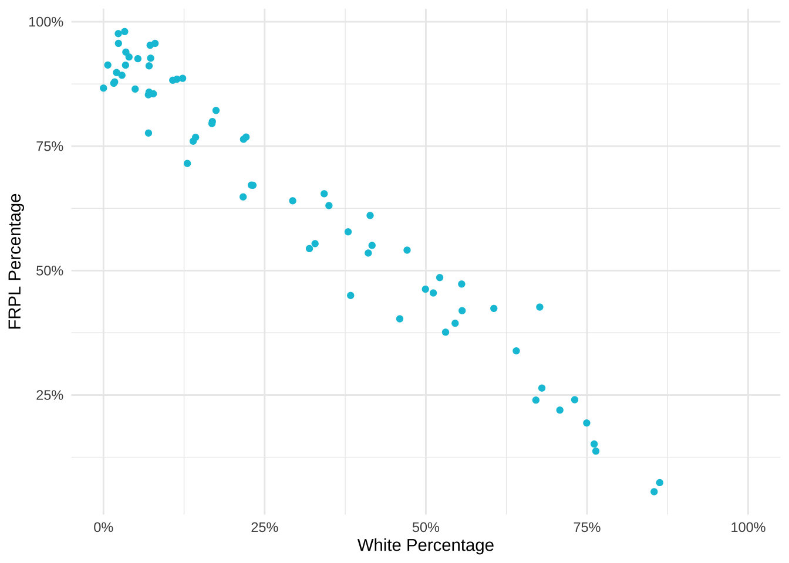

# Load packages
library(tidyverse)
library(tabulizer)
library(janitor)
# Extract tables with race data
race_pdf <-
extract_tables("http://studentaccounting.mpls.k12.mn.us/uploads/racial_ethnic_school_gradefall2017.pdf")
# Create data frame
race_df <- # many thanks to my brother @gvelasq for purrrifying this
race_pdf %>%
map(as_tibble) %>%
map_df(~ slice(., -1:-2)) %>%
set_names(c("school_group",
"school_name",
"grade", "na_num",
"na_pct",
"aa_num",
"aa_pct",
"as_num",
"as_pct",
"hi_num",
"hi_pct",
"wh_num",
"wh_pct",
"pi_pct",
"blank_col",
"tot"))
race_filter <-
race_df %>%
select(-school_group, -grade, -pi_pct, -blank_col) %>% # Remove unnecessary or blank columns
filter(str_detect(school_name, "Total"),
school_name != "Grand Total") %>% # otherwise totals are duplicated
mutate(school_name = str_replace(school_name, "Total", ""),
across(where(is.character), trimws))
# Extract tables with FRPL data
frpl_pdf <-
extract_tables("https://studentaccounting.mpls.k12.mn.us/uploads/free_reduced_meal_fall_2017_2.pdf")
# Create data frame
frpl_df <- # many thanks to my brother @gvelasq for purrrifying this
frpl_pdf %>%
map(as_tibble) %>%
map_df(~ slice(., -1)) %>%
set_names(c("school_grades",
"school_name",
"total_students",
"frpl_pct",
"free_num",
"reduce_num",
"not_eligible_num"))
frpl_filter <-
frpl_df %>%
filter(school_name != "") %>%
select(-school_grades)
# Merged data
merged_df <-
left_join(race_filter, frpl_filter, by = c("school_name")) %>%
mutate(across(2:17, as.numeric)) %>%
mutate(frpl_pct = (free_num + reduce_num)/total_students,
hi_povnum = case_when(frpl_pct > .75 ~ hi_num),
aa_povnum = case_when(frpl_pct > .75 ~ aa_num),
wh_povnum = case_when(frpl_pct > .75 ~ wh_num),
as_povnum = case_when(frpl_pct > .75 ~ as_num),
na_povnum = case_when(frpl_pct > .75 ~ na_num)) %>%
adorn_totals() %>%
mutate(na_pct = na_num/tot,
aa_pct = aa_num/tot,
as_pct = as_num/tot,
hi_pct = hi_num/tot,
wh_pct = wh_num/tot,
frpl_pct = (free_num + reduce_num)/total_students, # otherwise total frpl_pct is off
hi_povsch = hi_povnum/hi_num[which(school_name == "Total")],
aa_povsch = aa_povnum/aa_num[which(school_name == "Total")],
as_povsch = as_povnum/as_num[which(school_name == "Total")],
wh_povsch = wh_povnum/wh_num[which(school_name == "Total")],
na_povsch = na_povnum/na_num[which(school_name == "Total")])
# Finish up the data frame
tidy_df <-
merged_df %>%
pivot_longer(cols = na_num:na_povsch,
names_to = "category",
values_to = "value")Disaggregating school district data
tutorial
Exploring why disaggregation of data is important by looking at district demographics.
I am a data analyst committed to nonprofit work with the aim of reducing racial and socioeconomic inequities. Data, and in particular disaggregated data, can provide measures of the equity of a system, process, or program. Displaying data by subgroups is an important step in any data team’s equity journey, and exploring these data beyond averages can highlight the most prominent equity needs.
In this post, I define what disaggregated data is and how it can inform teams on their equity work. Then, I run various cuts on Minneapolis Public Schools data. The district’s reporting of the composition of their schools provides an excellent opportunity to explore inequities in a system.
Although this post heavily references education and student data, the principle of using distributions is paramount in any field that strives to close equity gaps.
What is Equity
Inequities are disparities in opportunity, resources, and treatment. Racial and socioeconomic inequities are those that are as a result of one’s race or socioeconomic status. The unequal distribution of opportunity, resource, and treatment can be due to many factors, including patterns in society. Examples include:
- Racial attitudes/bias that act subtly to undermine and exclude,
- Continued redlining in lending,
- Embedded biases in education (images, language, school discipline),
- Long term ramifications of poor health/healthcare.
Because the definition of equity varies from team to team, it is important to decide which inequities to identify and focus on.
What is disaggregated data
According to the Glossary of Education Reform, the formal definition of disaggregated data is:
Disaggregated data refers to numerical or non-numerical information that has been (1) collected from multiple sources and/or on multiple measures, variables, or individuals; (2) compiled into aggregate data—i.e., summaries of data—typically for the purposes of public reporting or statistical analysis; and then (3) broken down in component parts or smaller units of data.
Aggregate population numbers are broken down into smaller groupings that analysts can compare and contrast. These groupings depend on your team’s definition of equity, whether it be focused on race, socioeconomic status, race AND socioeconomic status, age, ethnicity, etc.
Why use disaggregated data
Particularly in education, disaggregated data is essential in identifying where solutions are needed to solve inequities. Per NCES’ Forum Guide to Collecting and Using Disaggregated Data on Racial/Ethnic Subgroups:
Educators need both high-level data summaries as well as disaggregated data that accurately describe smaller groups of students they serve. Access to and analysis of more detailed data—that is, disaggregated data—can be a useful tool for improving educational outcomes for small groups of students who otherwise would not be distinguishable in the aggregated data used for federal reporting. Disaggregating student data into subpopulations can help schools and communities plan appropriate programs; decide which interventions to implement; target limited resources; and recognize trends in educational participation, outcomes, and achievement.
Minneapolis Public Schools example
Minneapolis Public Schools (MPS) reports their student demographics in a robust, complete way. Not only do they report the percentage of students in a subgroup, but they also include the number of students in each subgroup. This allows a deep look into their individual school demographics and gives us the opportunity to explore equity in their district.
Pulling data
MPS publishes their school data in PDFs. Thankfully, the {tabulizer} package exists! It easily and quickly pulled the data into lists which I then transformed to data frames and tidied up.
First glance: MPS District demographics
Here is a barplot which shows the percentage of different subgroups in the school district. FRPL stands for Free/Reduced Price Lunch, often used as a proxy for poverty. Students from a household with an income up to 185 percent of the poverty threshold are eligible for free or reduced price lunch.
Warning
Definitions are very important in disaggregated data. FRPL is used because it’s ubiquitous and reporting is mandated but there is debate as to whether it actually reflects the level of poverty among students.
tidy_df %>%
filter(school_name == "Total",
str_detect(category, "pct")) %>%
mutate(category = factor(
category,
levels = c("aa_pct", "wh_pct", "hi_pct", "as_pct", "na_pct", "frpl_pct")
)) %>%
ggplot(aes(x = category, y = value)) +
geom_bar(stat = "identity", aes(fill = factor(category))) +
xlab("Subgroup") +
ylab("Percentage of Population") +
scale_x_discrete(labels = c("Black", "White", "Hispanic", "Asian", "Native Am.", "FRPL")) +
scale_y_continuous(labels = scales::percent) +
scale_fill_iv() +
theme_iv() +
theme(legend.position = "none")
When we look at these data, MPS looks like a diverse school district. Almost 40% of students are Black and around 35% are White. 60% of the students are eligible for FRPL, which is high for Minnesota but close to the US average of 52.1%.
However, let’s explore if there’s more to this story.
Discover distributions
Another view of the data can be visualizing the distribution of percentage of a demographic within schools. Here is a histogram for the percentage of White students within the 74 MPS schools for which we have data.
merged_df %>%
filter(school_name != "Total") %>%
ggplot(aes(x = wh_pct)) +
geom_histogram(fill = "#00C3DA", breaks= seq(0, 1, by = .1)) +
xlab("White Percentage") +
ylab("Count") +
scale_x_continuous(labels = scales::percent) +
theme_minimal() +
scale_fill_iv() +
theme_iv() +
theme(legend.position = "none")
27 of the 74 (36%) of schools have between 0-10% White students. This implies that even though the school district may be diverse, the demographics are not evenly distributed across the schools. More than half of schools enroll fewer than 30% of White students even though White students make up 35% of the district student population.
The school race demographics are not representative of the district populations but does that hold for socioeconomic status as well?
Create categories
High-poverty schools are defined as public schools where more than 75% of the students are eligible for FRPL. According to NCES, 24% of public school students attended high-poverty schools. However, different subgroups were overrepresented and underrepresented within the high poverty schools. Is this the case for MPS?
tidy_df %>%
filter(school_name == "Total",
str_detect(category, "povsch")) %>%
mutate(category = factor(category, levels = c("hi_povsch", "na_povsch", "aa_povsch", "as_povsch", "wh_povsch"))) %>%
ggplot(aes(x = category, y = value)) +
geom_bar(stat = "identity", aes(fill = factor(category))) +
xlab("Subgroup") +
ylab("Percentage in High Poverty Schools") +
scale_x_discrete(labels = c("Hispanic", "Native Am.", "Black", "Asian", "White")) +
scale_y_continuous(labels = scales::percent) +
scale_fill_iv() +
theme_iv() +
theme_minimal() +
theme(legend.position = "none")
9% of White students attend high poverty schools, compared to 46% of Black students, 51% of Hispanic students, 46% of Asian students, and 49% of Native American students. These students are disproportionately attending high poverty schools.
Reveal relationships
Let’s explore what happens when we correlate race and FRPL percentage by school.
merged_df %>%
filter(school_name != "Total") %>%
ggplot(aes(x = wh_pct, y = frpl_pct)) +
geom_point(color = "#00C3DA") +
xlab("White Percentage") +
ylab("FRPL Percentage") +
scale_y_continuous(labels = scales::percent) +
scale_x_continuous(labels = scales::percent) +
theme_minimal() +
theme_iv() +
theme(legend.position = "none")
Similarly to the result above, there is a strong negative correlation between FRPL percentage and the percentage of White students in a school. High poverty schools have a lower percentage of White students and low poverty schools have a higher percentage of White students.
Conclusion
According to the Urban Institute, the disproportionate percentage of students of color attending high poverty schools “is a defining feature of almost all Midwestern and northeastern metropolitan school systems.” Among other issues, high poverty schools tend to lack the educational resources—like highly qualified and experienced teachers, low student-teacher ratios, college prerequisite and advanced placement courses, and extracurricular activities—available in low-poverty schools. This has a huge impact on these students and their futures.
Because of the disaggregated data Minneapolis Public Schools provides, we can go deeper than the average of demographics across the district and see what it looks like on the school level. These views display that (1) there exists a distribution of race/ethnicity within schools that are not representative of the district, (2) that students of color are overrepresented in high poverty schools, and (3) there is a relationship between the percentage of White students in a school and the percentage of students eligible for FRPL.
Examples of disaggregated data reporting
There are so many amazing examples out there using disaggregated data. These two are my favorites:
- Money, Race and Success: How Your School District Compares
- Why Pinellas County is the worst place in Florida to be black and go to public school
Liked this article? I’d love for you to retweet!
New blog post 🎉: Why Equity Requires Looking Beyond Averages 🕵🏽♀️📊 A Look at Minneapolis Public Schools using the awesome packages #tabulizer 📑 and #janitor ✨ https://t.co/w4WiuDo0Bl #rstats pic.twitter.com/2MnY3ctFYH
— Isabella Velásquez (@ivelasq3) September 24, 2018